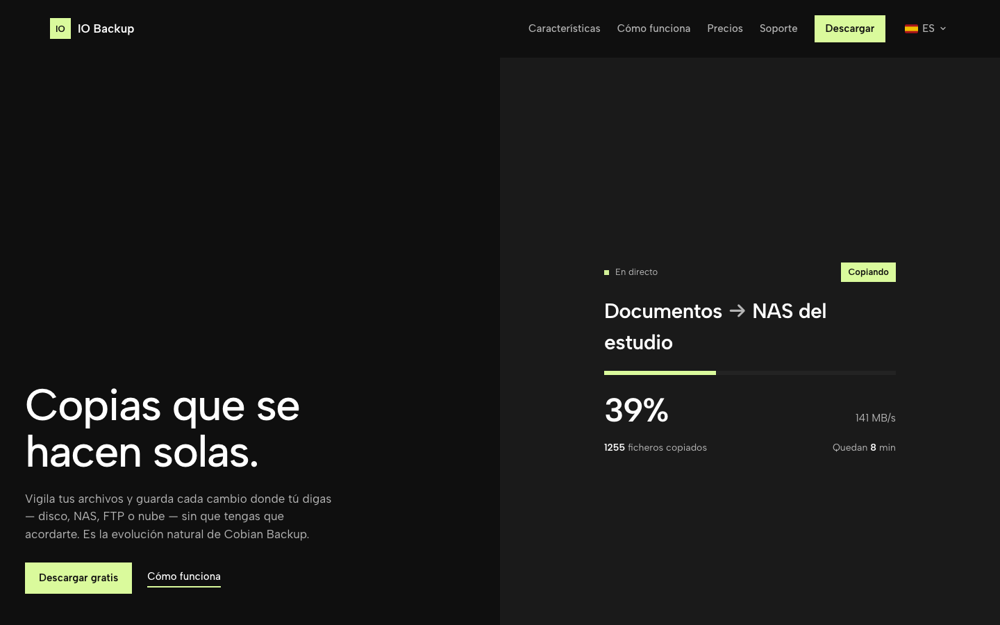

Download
IO-Backup.dmg — always the latest version; auto-update included
IO-Backup-Setup.exe — installer with background service
www.io-backup.com — user portal, licenses and support
What it is
IO Backup is the spiritual successor of Cobian Backup: incremental backups that produce browsable snapshots — every run is a complete restore point from which you can recover a file, a folder or the whole tree. An OS-level watcher records only what changes, so each pass touches only what's new.

Features
No full scans — USN Journal (Windows), FSEvents (macOS) and inotify (Linux) record only what changes; every pass touches just the new data.
Browsable snapshots — every run creates a complete restore point; restore a file, a folder or everything.
True resume — if the network drops or you shut down, the next run continues the *same* snapshot where it left off, even mid-file (byte-level resume on FTP).
Destinations — local disk, SMB, FTP/FTPS, SFTP; WebDAV, S3, Google Drive and OneDrive in development.
Rust engine + Flutter apps — native daemon for Windows, macOS and Linux; desktop and mobile clients (iOS/Android) that control your PCs and servers remotely.
Full-history index — every version of every file, when it changed and which snapshot restores it.
Auto-update — the app checks for new versions every 6 h and updates itself.
How to use it
- 1Install IO Backup (DMG on macOS, Setup on Windows) and create a free account in the app or at io-backup.com.
- 2Create your first task: choose which folders to copy and the destination (external drive, NAS over SMB/FTP, SFTP…).
- 3Schedule frequency and retention — the daemon runs in the background with no window.
- 4Link the mobile app to watch your backups and launch tasks remotely from iPhone/Android.
- 5To restore: open any snapshot, browse the tree like a Finder and recover what you need.
Requirements
macOS 12+ · Windows 10+ · Linux daemon available · The DMG is Developer-ID signed and notarized by Apple.
What's in this repository
IO-Backup-<version>.dmg— signed + notarized macOS installerIO-Backup-<version>.zip— macOS auto-update archiveIO-Backup-Setup-<version>.exe/IO-Backup-Setup.exe— Windows installer (service + app)IO-Backup-<version>-Windows-Portable.zip— portable Windows buildiobackupd.exe— headless Windows daemonversion.json— version feed for the auto-updater
FAQ
Do my backups go to your cloud?
Not by default — you choose the destination (your disk, your NAS, your FTP). Your backups are yours and live where you decide.
What if a backup is cut short?
The next run resumes the same snapshot exactly where it stopped — even mid-file on FTP destinations.
Is it free?
The Personal edition is free; Pro and Cloud+ plans unlock advanced features — see io-backup.com.
Support
- Website & contact: www.io-backup.com
- User portal, licenses and support from the portal.